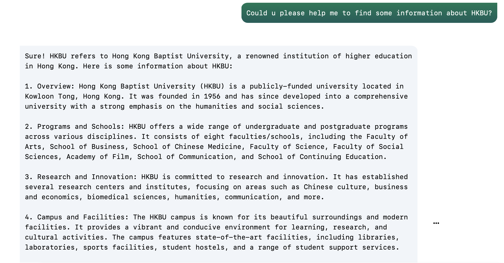

Chatbots have brought many conveniences to people's daily lives.
The convenience of chatbots lies in their availability, real-time response and personalized interaction. Therefore, chatbots can provide people with convenient help in information access, schedule management, social entertainment, etc.
Information Access
Chatbots are convenient for fast search and acquisition of information.
They can make it easy for users to find information by instantaneously responding to questions and requests-through text input, audio input, or both-without the need for human intervention or manual research.
In this way, Chatbots can provide timely answers and related information on common knowledge problems such as weather forecasts, news updates, and travel guides, saving people time searching and browsing many web pages.
ChatGPT helps to access information

Social Entertainment
One sector where chatbots are making a significant impact is entertainment and media. These intelligent virtual assistants are revolutionizing the way audiences engage with content, enhancing user experiences, and streamlining content delivery.
The ease of the chatbot's verbal interaction, one can have it play specific songs, artists, or respond in a fun way.
The Washington Post has developed a chatbot called 'Feels Bot'. Thirty days before the US election, Feels Bot sends users a daily message asking how they feel about the election. It provides five emoticons, ranging from very angry to happy, so users can choose the one that best matches their feelings. Then, the following day, the users' feeling emojis were created into a statistical chart showing the change in voters' intentions. According to data released by WaPo, less than 10,000 users have joined this account, which is a small number, but more than 65 percent of users have responded daily. Because of its simple question, which asks you, "How are you feeling today?" as if you were chatting, users will intuitively reply, thus creating an extremely high interaction rate.
The current technology is still imperfect, and chatbots often crash.Therefore, the convenience brought by Chatbot sometimes becomes a joke. Whether it is the giants who are optimistic about the commercial prospects of the bot open platform or the users who are full of expectations for the intelligent interaction between bots and humans, this situation is not good enough.